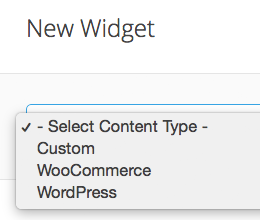
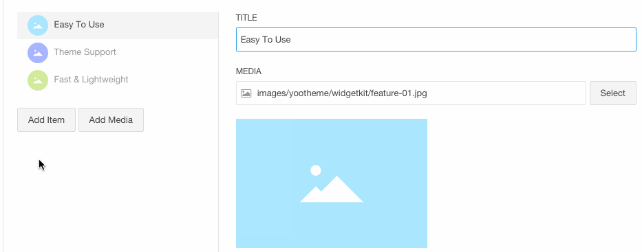

In Widgetkit 2 you can create widgets directly from the WordPress or Joomla editor or through the Widgetkit plugin or extension panel.
When creating a new widget you are confronted with a select box that allows you to choose between creating custom content and loading content from WordPress, Joomla, ZOO, K2 or Woocommerce.
When creating content for your widget, hit Add Item to add single content items. Once you have selected an image or video, a preview will be visible below the media field. An item title is automatically generated from the file name, dropping file extension, hyphens and so on and converting the initials of each word to caps.
You can also type in the path directly. The WordPress media manager only allows you to access the upload folder. This is where being able to type your own path comes in handy, so you can use a different folder structure.
In the Content field you can add text or Markup as a description to your media. You can also add a link to each content item. When configurating the widget in the {doc:widget-plugins text:Widget Manager}, you will determine, how to display the link. For example, it can be a button or an image overlay.
To select multiple media items at once through the media library or manager of your CMS, hit the Add Media button. To select consecutive files, click on the first file, hold down the Shift key and click on the last item of the group. To select multiple, but non-consecutive files, just hold down the cmd key on an Apple computer or the Ctrl key on a PC while clicking on the items you want to select.
Widgetkit supports the srcset attribute, which allows you to use a number of differently sized versions of the same image. These will be loaded automatically based on the pixel density of the user's display. So if someone visits your site from a device with a retina display, their browser will choose the large source image instead of the smaller one, which would probably be all pixelated.
All you need to do is upload a second version of your image, which is twice as big and append -2x to the file name.
You can use videos as media items inside Widgetkit, no matter, if you want to embed YouTube or Vimeo videos or upload your own media. Additionally, you can add a poster image, which will be displayed on mobile devices.
To embed a video in Widgetkit, just copy the video path from your video site into the media field. It is important that you use the path from the browser's address bar and not the embed code you will get when using the Share button. Otherwise it will not be displayed correctly within Widgetkit.
Add parameters to further control the video, for example to enable autoplay and loop. Embedded YouTube videos can also be started at a specific timestamp. Widgetkit will add its own API. These examples show the paths you would ideally use to implement a video from YouTube or Vimeo.
This YouTube Video will start 100 seconds into the film, loop automatically, without controls or tone:http://www.youtube.com/watch?v=my-video-id&autoplay=1&loop=1&controls=0&showinfo=0&playlist=my-video-id&start=100http://vimeo.com/my-video-id?title=0&byline=0&autoplay=1&loop=1&setVolume=0Of course you can also upload your own video files through the media manager of your CMS. In Joomla make sure that you enable uploading of video files in the Global Configuration. Also note that you need to use MP4, OGV or WebM videos, as HTML5 doesn't support other video formats.
Widgetkit allows you to add fields to the Content Manager. Just hit Manage fields, pick one of the field types from the select form and hit Close. For more information, take a look at the {doc:custom-fields text:Custom fields} doc.

Widgetkit supports loading content from WordPress, Joomla, ZOO, K2 or Woocommerce. When hitting New Content Widgetkit will automatically show you the available content types. The Content Manager then gives you a number of options.
| Section | Description |
|---|---|
| Content | Determine how much of your content will be displayed in the widget. |
| Category | Select the categories you would like to be displayed, default is all. |
| Limit | Determine how many content items are going to be displayed. |
| Order | Determine the order in which content items will be displayed. |